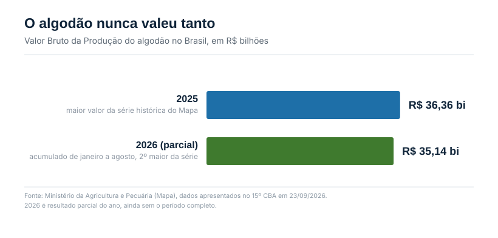
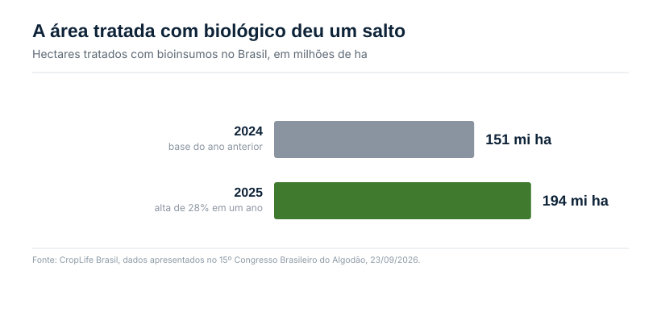

O painel que resumiu a safra em uma frase
Na quarta-feira, 23 de setembro, segundo dia do 15º Congresso Brasileiro do Algodão, em Belo Horizonte, o palco reuniu quatro nomes que decidem boa parte do que acontece na cotonicultura nacional: Aurélio Pavinato, CEO da SLC Agrícola, maior produtora do país; Alessandra Zanotto Costa, presidente da Associação Baiana dos Produtores de Algodão (Abapa); Alexandre de Marco, do Grupo BDM; e André Pessoa, CEO da Agroconsult, que conduziu o painel "O algodão brasileiro no tabuleiro global: perspectivas e estratégias para a safra 2026/27".
A frase que resumiu o debate foi de Pavinato: "A mudança é estrutural. O Brasil está conquistando o mercado internacional em consequência da nossa alta eficiência produtiva e do nosso sistema produtivo."
Os números por trás da frase
O Valor Bruto da Produção (VBP) do algodão brasileiro chegou a R$ 36,36 bilhões em 2025, o maior valor da série histórica calculada pelo Ministério da Agricultura. Em 2026, o resultado parcial, somando janeiro a agosto, já está em R$ 35,14 bilhões, o segundo maior da série, mesmo sem o ano fechado.

Pavinato colocou a transformação em perspectiva de década: o Brasil foi de 1 milhão para 2 milhões de hectares de algodão nos últimos 10 anos. E citou um número que explica por que o mercado internacional prestou atenção: "Nos últimos 20 anos, o consumo e a produção mundial praticamente não mudaram. E o Brasil mais que dobrou a sua produção para atender o mercado."
A posição do país no ranking mundial também mudou de patamar. A China segue na liderança em produção, com 7,29 milhões de toneladas de pluma, seguida pela Índia, com 5,19 milhões. Mas o dado que chamou atenção no painel foi outro: Mato Grosso, sozinho, superou os Estados Unidos em produção de algodão pela segunda safra consecutiva, com 2,9 milhões de toneladas contra 2,79 milhões dos norte-americanos. Um único estado brasileiro produz mais pluma que o país que por décadas foi sinônimo de algodão no mercado global, e com qualidade superior.
Segundo Pessoa, cerca de 40% da fibra brasileira exportada tem a China como destino. E o Brasil converteu o fato de colher duas safras de algodão por ano, uma após a soja e outra em sequência, em vantagem competitiva: fornecer pluma ao mercado internacional nos 12 meses do ano, algo que concorrentes de safra única não conseguem replicar.
Quanto essa área ainda pode crescer
Para a safra 2026/27, as projeções apresentadas no CBA convergem para o mesmo número, por caminhos diferentes. A Agroconsult projeta alta de 7% na área. A Abrapa, pela fala do presidente Gustavo Piccoli, trabalha com uma faixa de 8% a 10%. A SLC Sementes, por meio do diretor Gustavo Lunardi, projeta de 5% a 7%. As três estimativas desembocam perto de 2,2 milhões de hectares, o mesmo patamar da safra 2024/25.
Mas as três também vêm com a mesma ressalva: depende do clima. Lunardi foi direto sobre isso em entrevista durante o Congresso: o incremento de área de algodão só se confirma se o fenômeno climático não atrasar o plantio da soja. Como a maior parte do algodão brasileiro é semeado depois da soja, um El Niño que atrase a semeadura da oleaginosa, o mesmo risco que a Ed. 03 e a Ed. 04 já vinham tratando, encurta a janela do algodão e pode empurrar toda a expansão projetada para um patamar menor.
Some-se a isso a disponibilidade de crédito. O algodão tem custo elevado por hectare, entre sementes, fertilizantes, defensivos e operações mecanizadas, e depende de financiamento robusto. Mesmo com a perspectiva de receita melhor, a dificuldade de acesso ao crédito pode impedir que parte dos produtores amplie a área na proporção que planejou. É a mesma restrição de capital que já apareceu na Ed. 04, agora limitando o apetite de crescimento de outra cultura.
Questionado sobre onde ainda existe espaço para ganhar competitividade, Pavinato apontou uma combinação de agricultura digital, aplicações localizadas, maior precisão na adubação, uso de produtos biológicos e melhorias no manejo de fertilidade, pragas e doenças. Biológico entrou na lista do CEO da maior produtora de algodão do país como ferramenta de eficiência, não como opção marginal.
O mesmo Congresso, o outro lado do biológico
No mesmo dia, 23 de setembro, em outra sessão do CBA, o pesquisador Wagner Bettiol, da Embrapa Meio Ambiente, apresentou os números que explicam por que Pavinato pode contar com biológico como alavanca: a área tratada com bioinsumos no Brasil saltou de 151 milhões para 194 milhões de hectares em um único ano, alta de 28%. Bettiol foi além e projetou que os produtos biológicos podem responder por metade do mercado de defensivos até 2050.

Mas Bettiol não parou no número de crescimento. Ele trouxe o alerta que deu nome à própria sessão: "Há uma tendência de crescimento nesse mercado, pois a sociedade está exigindo produtos desenvolvidos com mais qualidade e mais sustentáveis. Quem compra tem direito de exigir qualidade."
Por ser formado por organismos vivos, o bioinsumo só funciona se a concentração de microrganismos viáveis estiver correta e não houver contaminação. Isso vale tanto para o produto comprado pronto quanto para a multiplicação feita na própria fazenda, prática que a Lei 15.070/2024 dispensa de registro, deixando o controle de qualidade sob responsabilidade do produtor e do responsável técnico.
O Laboratório de Microbiologia do Solo e Biotecnologia Agrícola da UFMT, em Sinop, analisou 640 amostras de bioinsumos usados no norte de Mato Grosso entre 2020 e 2025, entre produtos comerciais, inóculos e multiplicações on farm. A pesquisadora Flávia Sampaio Alexandre, que apresentou os resultados, identificou agente contaminante em uma das avaliações. Ela não tratou o caso como isolado: "O futuro dos bioinsumos depende de confiança. E a confiança começa com a qualidade."
O precedente que sustenta essa preocupação é mais grave. Em 2022, pesquisadores da Embrapa analisaram amostras de fazendas em Mato Grosso e Goiás e encontraram que mais de 90% dos controladores biológicos produzidos on farm não continham o microrganismo desejado. Ou seja, na maioria dos casos testados, o produto aplicado na lavoura simplesmente não era o que deveria ser.
O crescimento de 151 para 194 milhões de hectares mede área tratada, não eficácia do que foi aplicado. Se a taxa de falha observada em 2022 se repetir numa fração relevante dessa área, uma parte considerável dos 194 milhões de hectares recebeu um produto sem o microrganismo ativo. A curva de adoção sobe; a curva de confiança precisa subir junto, e essa segunda métrica ninguém está publicando.
O que isso significa para quem compra biológico no algodão
Durante o mesmo painel de qualidade, o professor Galdino Andrade Filho, da Universidade Estadual de Londrina, cobrou do setor algodoeiro mais atenção aos bioinsumos desenvolvidos especificamente para a cultura, comparando o momento atual da tecnologia à desconfiança inicial que cercou os organismos geneticamente modificados, antes de passarem por pesquisa, regulamentação e avaliação de segurança. A cobrança de Galdino conecta direto com o que a Ed. 05 já mostrou: o algodão lidera a adoção de biológico no país, mas essa liderança está concentrada quase toda no tratamento de sementes contra nematoide, com o sulco de plantio ainda com espaço para outras categorias.
O discurso de abertura do Congresso, do ministro da Agricultura, André de Paula, resumiu o momento em uma frase: "O mercado internacional mudou: já não basta responder o quanto produzimos, precisamos demonstrar como produzimos." Essa frase vale para a pluma que sai do Brasil rumo à China. E vale, com o mesmo peso, para o biológico que entra no sulco antes da semente. Um mercado que cresce 28% ao ano só sustenta essa velocidade se conseguir provar, amostra por amostra, que o que está no rótulo é o que está no produto, e que isso se traduz em resultado prático no campo.